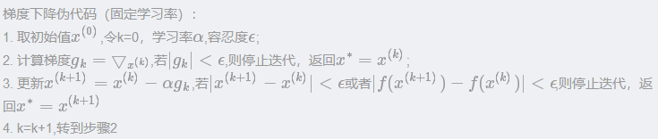
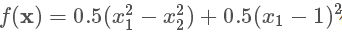
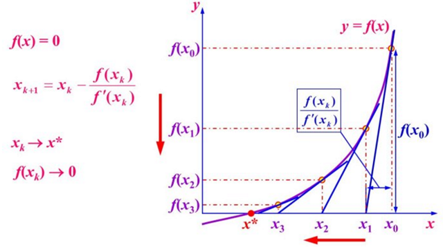
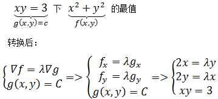

优化算法¶
训练机器学习算法很多时候本质上就是寻找一组最佳参数的过程，最佳是由目标函数或概率模型决定。给定了目标函数，我们通过优化算法找到最佳的值。
1. 梯度下降法 Gradient Descent¶
梯度下降法是最常用的最优算法之一。当目标函数是凸函数时，梯度下降法的解是全局解。一般情况下，其解不保证是全局最优解，梯度下降法的速度也未必是最快的。我们还需要假设函数是可微的，否则无法获得封闭解（即给出任意的自变量就可以求出其因变量）。
梯度下降法是一阶优化算法（因为只利用到了函数的一阶导数信息），其思想是用当前位置负梯度方向作为搜索方向，移动与当前位置负梯度成比例的一段步长。因为该方向为当前位置的最快下降方向，所以也被称为是最速下降法。梯度下降法的公式：

伪代码：
梯度下降法有两个缺点，一是靠近最优解的区域收敛速度明显变慢，二是固定学习率的情况下，可能在某点附近出现震荡，如下图表示的二维函数
在固定学习率的情况下，两种不同的学习率分别迭代20次的结果，起始点(x1,x2)=(0,0),最小值点(x1,x2)=(1,1)

可以看到如果学习率（步长）太小，随着迭代的增加，每次移动的距离越来越小，甚至难以逼近最优值，学习率太大，移动的轨迹在某值附近开始震荡，类似“之”形移动。对于这些缺点，可以通过使用可变学习率的方法优化，例如线性搜索等方法，每次迭代前寻找最优的学习率，再进行迭代；
基于基本的梯度下降法发展了几种梯度下降方法。
1.1 批量梯度下降法（Batch Gradient Descent，BGD）¶
批量梯度下降法是梯度下降法最原始的形式，它的具体思路是在更新每一参数时都使用所有的样本来进行更新。
优点：全局最优解；易于并行实现； 缺点：当样本数目很多时，训练过程会很慢。
1.2 随机梯度下降（Stochastic Gradient Descent，SGD）¶
随机梯度下降的思路是在每次迭代时，只使用一个样本，当样本个数很大的时候，随机梯度下降迭代一次的速度要远高于批量梯度下降方法。两者的关系可以这样理解：随机梯度下降方法以损失一部分精确度和增加一定数量的迭代次数为代价，换取了总体的优化效率的提升。增加的迭代次数远远小于样本的数量。如果样本量很大的情况（例如几十万），那么可能只用其中几万条或者几千条的样本，就已经迭代到最优解了。
优点：训练速度快； 缺点：准确度下降，并不是全局最优。
对批量梯度下降法和随机梯度下降法的总结：
批量梯度下降—最小化所有训练样本的损失函数，使得最终求解的是全局的最优解，即求解的参数是使得风险函数最小，但是对于大规模样本问题效率低下。
随机梯度下降—最小化每条样本的损失函数，虽然不是每次迭代得到的损失函数都向着全局最优方向，但是大的整体的方向是向全局最优解的，最终的结果往往是在全局最优解附近，适用于大规模训练样本情况。
1.3 批量梯度下降法（Mini-batch Gradient Descent，MBGD）¶
它的具体思路是在更新每一参数时都使用一部分样本（batch）来进行更新，可以选择对每个 batch 的梯度进行累加，或者取平均值。取平均值可以减少梯度的方差。可以看出该方法克服了上面两种方法的缺点，又同时兼顾两种方法的优点，是如今深度学习领域最常见的实现方式。
2. 牛顿法和拟牛顿法¶
2.1 牛顿法¶
上节介绍的梯度下降法只用到了目标函数的一阶导数，牛顿法是一种二阶优化算法，其核心思想是对函数进行泰勒展开。
2.1.1 用于方程求解¶
求解方程 f(x) = 0 的解：
- 选择一个接近函数f(x)=0 处的 x0，计算相应的f (x0) 和切线斜率f′(x0)
- 计算过点(x0,f(x0)) 并且斜率为f′(x0) 的直线和 X 轴的交点的 x 坐标，也就是求如下方程的解：f(x0)+f′(x0)∗(x−x0)=0
- 将新求得的点的 x 坐标命名为 x1，通常 x1 会比 x0 更接近方程f(x) = 0 的解。因此我们现在可以利用 x1 开始下一轮迭代。迭代公式可化简为如下所示：

由于牛顿法是基于当前位置的切线来确定下一次的位置，所以牛顿法又被很形象地称为是”切线法”。

或者这张图，更好理解：
已经证明，如果f’是连续的，并且待求的零点x是孤立的，那么在零点x周围存在一个区域，只要初始值 x0 位于这个邻近区域内，那么牛顿法必定收敛。 并且，如果f’(x)不为0, 那么牛顿法将具有平方收敛的性能，这意味着每迭代一次，牛顿法结果的有效数字将增加一倍。
2.1.2 用于最优化¶
对于求模板书极大极小值的问题，可以转化为求函数f的导数为0的问题，这样问题就可以看成和方程求解一样的问题(f’=0)，与用牛顿法求解很相似了。
- 先对 f(x) 进行二阶泰勒公式展开

- 然后对 f(x) 求导，得到：
注意，所有的 xk 和其导数都是已知的，视为常数项。
- 令 f’(x)=0 得到
关于牛顿法和梯度下降法的效率对比：
从本质上去看，牛顿法是二阶收敛，梯度下降是一阶收敛，所以牛顿法就更快。更通俗地说，比如你想找一条最短的路径走到一个盆地的最底部，梯度下降法每次只从你当前所处位置选一个坡度最大的方向走一步，牛顿法在选择方向时，不仅会考虑坡度是否够大，还会考虑你走了一步之后，坡度是否会变得更大（二阶导数信息）。所以，可以说牛顿法比梯度下降法看得更远一点，能更快地走到最底部。（牛顿法目光更加长远，所以少走弯路；相对而言，梯度下降法只考虑了局部的最优，没有全局思想。）
从几何上说，牛顿法就是用一个二次曲面去拟合你当前所处位置的局部曲面，而梯度下降法是用一个平面去拟合当前的局部曲面，通常情况下，二次曲面的拟合会比平面更好，所以牛顿法选择的下降路径会更符合真实的最优下降路径。
牛顿法的优缺点总结：
优点：二阶收敛，收敛速度快； 缺点：牛顿法是一种迭代算法，每一步都需要求解目标函数的Hessian矩阵的逆矩阵，计算比较复杂。
因此，如果在目标函数的梯度和Hessian矩阵比较好求的时候应使用Newton法。当模型的参数很多时Hessian矩阵的计算成本将会很大，导致收敛速度变慢，所以在深度学习中也很少使用牛顿法。
2.2 拟牛顿法¶
拟牛顿法是求解非线性优化问题最有效的方法之一，于20世纪50年代由美国Argonne国家实验室的物理学家W.C.Davidon所提出来。Davidon设计的这种算法在当时看来是非线性优化领域最具创造性的发明之一。不久R. Fletcher和M. J. D. Powell证实了这种新的算法远比其他方法快速和可靠，使得非线性优化这门学科在一夜之间突飞猛进。
拟牛顿法的本质思想是改善牛顿法每次需要求解复杂的Hessian矩阵的逆矩阵的缺陷，它使用正定矩阵来近似Hessian矩阵的逆，从而简化了运算的复杂度。拟牛顿法和最速下降法一样只要求每一步迭代时知道目标函数的梯度。通过测量梯度的变化，构造一个目标函数的模型使之足以产生超线性收敛性。这类方法大大优于最速下降法，尤其对于困难的问题。另外，因为拟牛顿法不需要二阶导数的信息，所以有时比牛顿法更为有效。如今，优化软件中包含了大量的拟牛顿算法用来解决无约束，约束，和大规模的优化问题。
牛顿法在基础机器学习中有用到，但在深度学习中很少用。这里不做展开。
3. 共轭梯度法 Conjugate Gradient¶
共轭梯度法是介于最速下降法与牛顿法之间的一个方法，它仅需利用一阶导数信息，但克服了最速下降法收敛慢的缺点，又避免了牛顿法需要存储和计算Hesse矩阵并求逆的缺点，共轭梯度法不仅是解决大型线性方程组最有用的方法之一，也是解大型非线性最优化最有效的算法之一。 在各种优化算法中，共轭梯度法是非常重要的一种。其优点是所需存储量小，具有步收敛性，稳定性高，而且不需要任何外来参数。
具体过程暂略。
4. 启发式优化方法¶
启发式方法指人在解决问题时所采取的一种根据经验规则进行发现的方法。其特点是在解决问题时,利用过去的经验,选择已经行之有效的方法，而不是系统地、以确定的步骤去寻求答案。启发式优化方法种类繁多，包括经典的模拟退火方法、遗传算法、蚁群算法以及粒子群算法等等。
还有一种特殊的优化算法被称之多目标优化算法，它主要针对同时优化多个目标（两个及两个以上）的优化问题，这方面比较经典的算法有NSGAII算法、MOEA/D算法以及人工免疫算法等。
具体的几种方法介绍可参考： http://www.cnblogs.com/maybe2030/p/4665837.html
5. 拉格朗日乘数法¶
5.1 基本思想¶
拉格朗日乘数法主要用于解决 带约束 的优化问题，基本的拉格朗日乘数法，就是求函数 f(x1,x2,...) 在 g(x1,x2,...)=C 的约束条件下的极值的方法。其主要思想是引入一个新的参数 λ （即拉格朗日乘子），将约束条件函数与原函数联系到一起，使能配成与变量数量相等的等式方程，从而求出得到原函数极值的各个变量的解。
5.2 示例¶
求双曲线函数 xy=3 上距离原点最近的点的坐标。
设(x,y) 是函数上的任意一点，则距离原点的距离为：

明显，两个函数的曲线相切的点就是我们要求的点。如果把双曲线看作自身的等高线，那么两个等高线相切时，二者在切点处的切线也相同，也就是说它们的梯度向量平行，即：

如果两个向量平行，则其中一个梯度向量可以写为另一个的常数倍：

这样，我们把问题转化为了一个含有3个未知变量的方程组：
到这里，已经可以用最简单的代入法求解了。这个方程组就称为拉格朗日方程组。λ 就是拉格朗日乘子。
拉格朗日乘数法并不会告诉我们最值的类型，结果可能是最大值、最小值或鞍点，那么如何判断是最大值还是最小值呢？只能通过将拉格朗日方程组的解代入问题方程来判断。
5.3 拉格朗日乘数法的基本形态¶
求函数 f(x,y) 在满足 g(x,y)=0 下的条件极值，可以转化为函数 F(x,y,λ) = f(x,y) + λg(x,y) 的无条件极值问题。可以用下图来帮助理解：

绿线标出的是约束 g(x,y)=c 的点的轨迹。蓝线是 f(x,y) 的等高线。箭头表示斜率，和等高线的法线平行。在最优解处，f 和 g 的斜率平行，梯度向量也平行。通过对 F(x,y,λ) 求偏导，即可得到方程组的解。
References
| [1] | 常见的几种最优化方法 |
https://www.cnblogs.com/maybe2030/p/4751804.html
| [2] | 机器学习——优化算法：牛顿法-初探 |
https://blog.csdn.net/u013793732/article/details/79575507
..最小二乘法-线性回归 .. https://www.cnblogs.com/bigmonkey/p/8305145.html